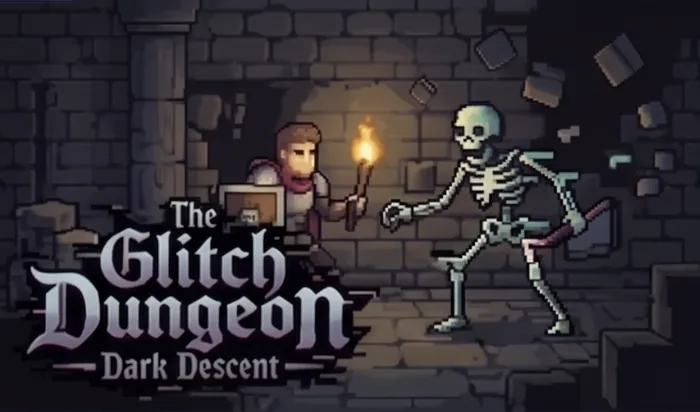
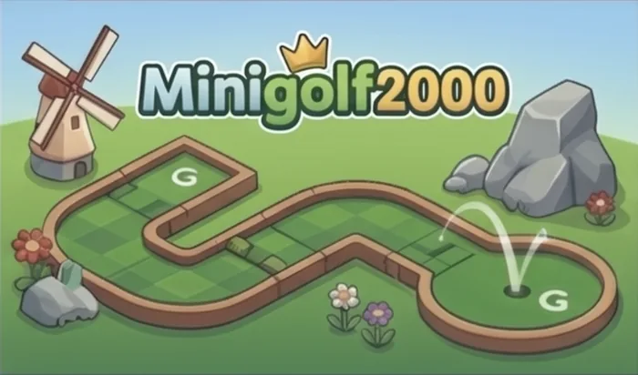
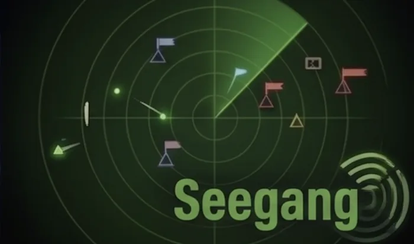
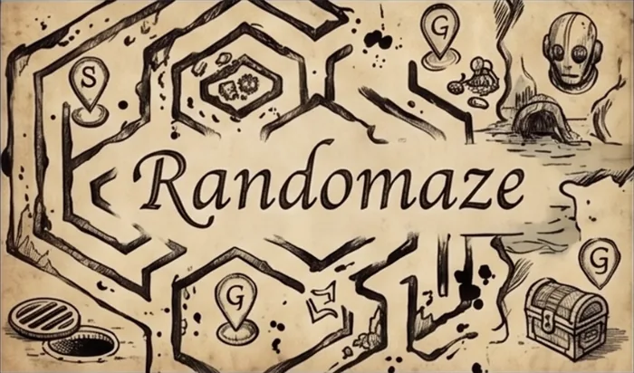
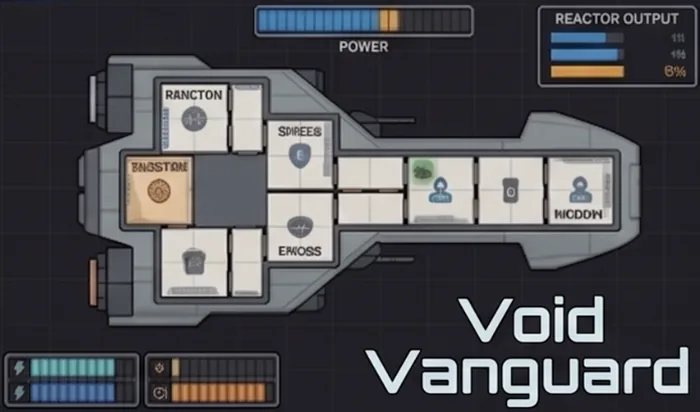
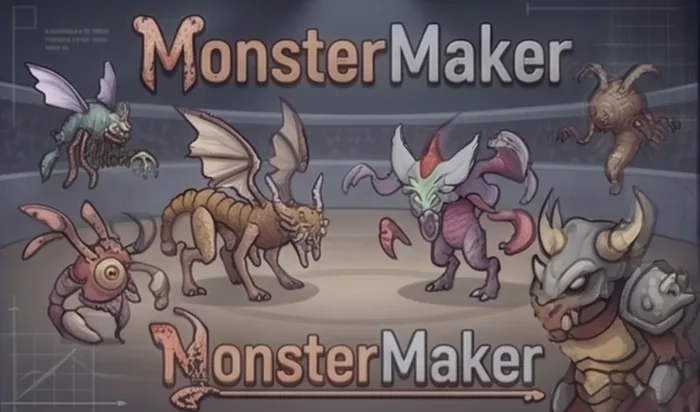

Professor für Digitalisierung · FlensburgProfessor of Digitalisation · Flensburg
Prof. Dr. Till Albert
Ich arbeite an der digitalen Transformation kleiner und mittlerer Unternehmen — zwischen Forschung, Lehre und handfesten Prototypen. Aktuell: KI-Agenten in betrieblichen Prozessen.I work on the digital transformation of small and medium-sized companies — between research, teaching and hands-on prototypes. Currently: AI agents in operational business processes.
„Wer erfolgreich digitalisieren will, muss komplexe soziotechnische Systeme verstehen.““Anyone who wants to digitalise successfully has to understand complex socio-technical systems.”
SchwerpunkteFocus areas
Digitale TransformationDigital transformation
Soziotechnische Systeme in KMU und Familienunternehmen — von der Strategie bis in den Betrieb.Socio-technical systems in SMEs and family businesses — from strategy to the shop floor.
Innovations- & TechnologiemanagementInnovation & technology management
Technologiereife, Patent- und Publikationsanalyse, Technology Intelligence.Technology maturity, patent and publication analysis, technology intelligence.
Methoden der ZukunftsforschungFutures research methods
Szenario-Technik, Foresight, Roadmapping — zunehmend KI-gestützt.Scenario technique, foresight, roadmapping — increasingly AI-supported.
Entrepreneurship & IntrapreneurshipEntrepreneurship & intrapreneurship
Internes Unternehmertum in inhabergeführten Betrieben, Inkubation, Company Building.Internal entrepreneurship in owner-managed companies, incubation, company building.
Projekte & ExperimenteProjects & experiments
Kurzfassung zuerst — für die ganze Geschichte ein Projekt aufklappen.Short version first — open a project for the full story.
KI-Agenten für einen HandwerksbetriebAI agents for a craft business
Laufend: Agentensysteme für interne Prozesse in einem mittelständischen Handwerksbetrieb.Ongoing: agent systems for internal processes in a medium-sized craft business.
2025 — LAUFEND2025 — ONGOING
KI-Agenten für einen HandwerksbetriebAI agents for a craft business
Laufend: Agentensysteme für interne Prozesse in einem mittelständischen Handwerksbetrieb.Ongoing: agent systems for internal processes in a medium-sized craft business.
Wo entlastet ein Agent im kleinen Betrieb wirklich — Angebotserstellung, Terminplanung, Dokumentation — und wo entsteht bloß eine neue Fehlerquelle? Das Projekt prüft das im laufenden Betrieb statt im Labor.Where does an agent genuinely relieve the workload in a small company — quoting, scheduling, documentation — and where does it just add a new source of error? The project tests this in real operations rather than in a lab.
Sylabary
Aus einem groben Vorlesungstitel werden Folien, Video, Lernmaterial und Prüfungsaufgaben.From a rough lecture title to slides, video, learning material and exam questions.
WERKZEUGTOOL
Sylabary
Aus einem groben Vorlesungstitel werden Folien, Video, Lernmaterial und Prüfungsaufgaben.From a rough lecture title to slides, video, learning material and exam questions.
Sylabary kommt mit erstaunlich wenig aus: Ein grober Titel für eine Vorlesung genügt. Das Werkzeug fragt gezielt nach — etwa nach dem Adressatenkreis — und bestimmt anschließend selbst, welche didaktischen Prinzipien tragen; beeinflussen lässt sich das natürlich jederzeit. Daraus entsteht ein passender Foliensatz, ein Video, in dem mein Avatar mit meiner Stimme durch diesen Foliensatz führt, und dazu Lernmaterial und Prüfungsaufgaben.Sylabary needs remarkably little to start: a rough title for a lecture is enough. The tool asks precise follow-up questions — about the intended audience, for instance — and then decides for itself which didactic principles fit; that decision can of course be overridden at any point. Out of this comes a matching slide deck, a video in which my avatar walks through that deck in my voice, and the accompanying learning material and exam questions.
Der Leitgedanke dahinter: Policies statt Prompts. Was gut ist, wird einmal als Regel hinterlegt und nicht bei jedem Kurs neu formuliert — das macht die Ergebnisse über einen Studiengang hinweg konsistent und nachvollziehbar.The guiding idea: policies instead of prompts. What works well is stored once as a rule rather than rewritten for every course — which keeps results consistent and auditable across a whole degree programme.
Entstanden ist Sylabary aus dem regelmäßigen Austausch mit Jan Gerken, der das verwandte Projekt „Lernpfad“ entwickelt hat. Zwei Werkzeuge, eine Frage: Wie kommt man vom Curriculum zu konsistenten Lehrmaterialien, ohne jedes Artefakt von Hand zu bauen?Sylabary emerged from a running exchange with Jan Gerken, who developed the related project “Lernpfad”. Two tools, one question: how do you get from a syllabus to consistent teaching material without producing every artefact by hand?
Szenario-Technik als Scaffolding — das erste Vibe-Coding-ProjektScenario technique as a scaffold — the first vibe-coding project
FutureForge, mit Steffen Cords: eine One-Page-App, die Szenario-Berichte nach Gausemeier erzeugt.FutureForge, with Steffen Cords: a one-page app that generates scenario reports following Gausemeier.
ARCHIVARCHIVE
Szenario-Technik als Scaffolding — das erste Vibe-Coding-ProjektScenario technique as a scaffold — the first vibe-coding project
FutureForge, mit Steffen Cords: eine One-Page-App, die Szenario-Berichte nach Gausemeier erzeugt.FutureForge, with Steffen Cords: a one-page app that generates scenario reports following Gausemeier.
Eine Kollaboration mit meinem ehemaligen Kollegen und guten Freund Steffen Cords. Wir haben darin das noch junge Claude getestet, weil es vergleichsweise gute Programmierkompetenz bot — zunächst haben wir den Stand aus dem Web-Frontend hin- und hergemailt, später über GitHub ausgetauscht und schließlich das Plugin Cline genutzt, um auch andere Modelle zu vergleichen.A collaboration with my former colleague and good friend Steffen Cords. We tested the then still young Claude because it offered comparatively strong coding ability — at first mailing the current state back and forth from the web frontend, later via GitHub, finally through the Cline plugin so we could compare other models too.
Die Modelle haben damals noch Elemente halluziniert oder vergessen, das Attention Window war klein. Mit rudimentären Software-Development-Kenntnissen war die Arbeit von Rückschlägen gezeichnet — und wir haben sehr viel dabei gelernt.The models still hallucinated or forgot elements, and the attention window was small. With rudimentary software engineering skills the work was full of setbacks — and we learned a great deal from it.
Inhaltlich stützte sich die App auf Szenario-Projekte, die wir gemeinsam als Strategieberater bei der Porsche-Tochter MHP und davor in der Volkswagen Konzern-Zukunftsforschung umgesetzt hatten. Das Alleinstellungsmerkmal waren die sauber formulierten Prompts: minimaler Aufwand, umfassender Bericht. Das ist gelungen.Content-wise the app built on scenario projects we had run together as strategy consultants at Porsche subsidiary MHP and, before that, in Volkswagen Group future research. The distinguishing feature was the carefully written prompts: minimal input, comprehensive report. It worked.
Die Gründung haben wir wieder verworfen: Jede neue Modellgeneration erledigt mehr davon selbst, das Scaffolding wird immer entbehrlicher. Dokumentiert ist das Projekt in einer preisgekrönten Masterthesis von Mats Ramsl.We dropped the plan to found a company: every new model generation does more of this on its own, and the scaffolding becomes less necessary. The project lives on in an award-winning master's thesis by Mats Ramsl.
Virtual Reality in KMUVirtual reality in SMEs
Wann lohnt sich VR für ein kleines Unternehmen — und wann nicht? Das Projekt „VR-Leitfaden“ beantwortet das mit eigenen Experimenten.When is VR worth it for a small company — and when is it not? The “VR-Leitfaden” project answers that with its own experiments.
2024 — 2026
Virtual Reality in KMUVirtual reality in SMEs
Wann lohnt sich VR für ein kleines Unternehmen — und wann nicht? Das Projekt „VR-Leitfaden“ beantwortet das mit eigenen Experimenten.When is VR worth it for a small company — and when is it not? The “VR-Leitfaden” project answers that with its own experiments.
Gefördert vom Land Schleswig-Holstein aus dem Exzellenz- und Strukturbudget, angesiedelt am VR-Labor des Jackstädt-Zentrums. Am Ende soll ein Handbuch stehen, das sich ausdrücklich an Unternehmensverantwortliche ohne technischen Hintergrund richtet: ein Framework aus sieben Domänen, eine Taxonomie von Meeting-Typen mit Eignungsbewertung und eine nüchterne Kostenschätzung nach der Analogiemethode.Funded by the state of Schleswig-Holstein from its excellence and structural budget, run at the VR laboratory of the Jackstädt Centre. The end product is a handbook aimed explicitly at business decision-makers without a technical background: a seven-domain framework, a taxonomy of meeting types with suitability ratings, and a sober cost estimate based on the analogy method.
Der Kern ist eine selbst entwickelte VR-Multiplayer-Anwendung in Unity, gebaut nach dem Principal-Agent-Paradigma: Drei Führungskräfte verhandeln darin über die Verteilung strategischer Ressourcen. Verhandlung unter konkurrierenden Zielen ist in der VR-Forschung erstaunlich unterrepräsentiert, obwohl sich kaum ein Szenario besser dafür eignet. Im ersten Workshop-Durchgang (n=15) fiel die hedonische Bewertung sehr hoch aus, und selbst physisch getrennte Teilnehmende zeigten deiktische Gesten und soziale Zuwendung — VR aktiviert Präsenzmuster des echten Treffens über Distanz hinweg. Zugleich wiesen 38 % danach erhöhte Motion-Sickness-Werte auf. Beides gehört in den Leitfaden.At its heart is a Unity-based VR multiplayer application we built ourselves, following the principal–agent paradigm: three executives negotiate over the allocation of strategic resources. Negotiation under competing goals is surprisingly under-represented in VR research, even though hardly any scenario suits the medium better. In the first workshop round (n=15) the hedonic ratings came out very high, and even physically separated participants produced deictic gestures and social orientation — VR activates the presence patterns of a face-to-face meeting across distance. At the same time, 38 % showed elevated motion sickness scores afterwards. Both belong in the guide.
Ein zweites Experiment lieferte einen klaren Negativbefund. Wir haben geprüft, ob sich mit dem LiDAR-Sensor handelsüblicher iPhones VR-taugliche 3D-Scans erzeugen lassen — bewusst mit Geräten, die in KMU-Belegschaften ohnehin verbreitet sind. Detailverlust, Loch-Artefakte und physikalisch bedingte Transparenzprobleme machen Consumer-LiDAR für professionelle Inhalte derzeit unbrauchbar. Negativbefunde sind wissenschaftlich gleichwertig und praktisch oft wertvoller: Sie bewahren KMU vor Fehlinvestitionen. Interessant wird der kombinierte Weg aus iPhone-LiDAR und 3D Gaussian Splatting, den wir uns als Nächstes ansehen.A second experiment produced a clear negative result. We tested whether the LiDAR sensor in off-the-shelf iPhones can generate 3D scans good enough for VR — deliberately using devices already common in SME workforces. Loss of detail, hole artefacts and physically unavoidable transparency problems make consumer LiDAR unusable for professional content at present. Negative findings are scientifically just as valid and often more useful in practice: they keep small companies from investing in the wrong thing. The combination of iPhone LiDAR and 3D Gaussian splatting is the more promising route, and it is what we look at next.
Als Nächstes bekommt die Anwendung einen KI-gesteuerten Prinzipal: Ein Agent übernimmt die Rolle des abwesenden Verhandlungspartners. Die Frage dahinter: Erzeugen KI-Avatare in VR-Meetings soziale Präsenz — und verändern sie das strategische Verhalten der Menschen am Tisch?The next step gives the application an AI-driven principal: an agent takes the role of the absent negotiating partner. The question behind it: do AI avatars in VR meetings generate social presence — and do they change the strategic behaviour of the humans at the table?
VR-Labor ↗VR laboratory ↗Spielbare ExperimentePlayable experiments
Jedes dieser kleinen Spiele beantwortet eine Frage zur KI-gestützten Entwicklung. Alle laufen direkt im Browser.Each of these small games answers one question about AI-assisted development. All of them run in the browser.

Glitch Dungeon
Taugen Code Golfing und Demoscene-Stil für Vibe Coding? Ein Dark-Fantasy-Roguelike in Vanilla JS: prozedurale Ebenen, zehn Biome — und ein Glitch, der die Welt umbaut, während man darin steht.Is code golfing and demoscene style a fit for vibe coding? A dark-fantasy roguelike in vanilla JS: procedural floors, ten biomes — and a glitch that rebuilds the world while you are standing in it.
glitchdungeon.netlify.app ↗
Minigolf 2000
Ein vollständiges Spiel aus einem einzigen Prompt. Wie weit trägt eine gut formulierte Anweisung? Herausgekommen sind eine eigene Physik-Engine und ein Bahnformat, in das sich neue Löcher als einzelne Datei einhängen lassen.A complete game from a single prompt. How far does one well-formed instruction carry? What came out was a physics engine of its own and a course format into which new holes slot as a single file.
minigolf2000.netlify.app ↗
Seegang
Mobile Games heißt: ein Daumen links, ein Daumen rechts. Ein Roguelite auf dem Radarschirm der Hafenwache — die Bordsysteme feuern selbsttätig, die eigentliche Entscheidung ist die Fahrt.Mobile games means one thumb left, one thumb right. A roguelite on a harbour watch's radar screen — the onboard systems fire by themselves, the real decision is where you steer.
seegang.netlify.app ↗
Randomaze
Experimente mit A*-Pathfinding in prozedural erzeugten Hex-Labyrinthen. Fog of War, und vor dem Start ein kurzer Blick auf die Karte — je kürzer, desto höher der Punktemultiplikator.Experiments with A* path-finding in procedurally generated hex mazes. Fog of war, and a brief look at the map before the run — the shorter the look, the higher the score multiplier.
randomaze.netlify.app ↗
Void Vanguard
Wie fühlt sich ein Entity Component System an, wenn man es selbst baut? Angelehnt an Faster Than Light — wer das Original nicht kennt, wird es vermutlich zu komplex finden.What does an entity component system feel like when you build one yourself? Modelled on Faster Than Light — anyone who does not know the original will probably find it too complex.
void-vanguard.netlify.app ↗
MonsterMaker
Kann eine einzige Datenstruktur ein ganzes Spiel tragen? Ein Anatomie-Graph erzeugt Aussehen, Animation, Kampfwerte und Marktpreis — wer einer Kreatur den Arm abtrennt, ändert damit alles andere gleich mit.Can a single data structure carry an entire game? An anatomy graph drives appearance, animation, combat stats and market price — sever a creature's arm and everything else changes with it.
in Arbeitin progressLehre, Video & AudioTeaching, video & audio
Zwanzig Jahre Inverted Classroom — und ein Studio, das in den Laptop passtTwenty years of inverted classroom — and a studio that fits in a laptop
Der Ursprung liegt bei meinem Doktorvater Prof. Dr. Martin Möhrle, der seine Vorlesungen sehr früh im Inverted Classroom angeboten hat. Während der Corona-Jahre habe ich mein gesamtes Portfolio umgestellt und die Videos zunächst zu Hause aufgenommen.The idea goes back to my doctoral supervisor Prof. Dr. Martin Möhrle, who offered his lectures in an inverted classroom format very early on. During the Corona years I converted my entire portfolio and first recorded the videos at home.
Inzwischen starte ich am liebsten in Sylabary — komplett lokal, mit einer agentisch arbeitenden, selbst gehosteten KI. Für Stimme und Avatar kommen ElevenLabs und HeyGen dazu, weitere Materialien entstehen mit Claude Code. Der entscheidende Gewinn: Ich muss vor keiner Aufnahme mehr „in die Maske“ — neue Inhalte lassen sich damit regelmäßig aufgreifen statt einmal pro Semester.These days I prefer to start in Sylabary — entirely local, running on a self-hosted agentic AI. ElevenLabs and HeyGen come in for voice and avatar, further material is written with Claude Code. The decisive gain: I no longer have to go “into make-up” before every recording — so new content can be picked up regularly instead of once per semester.
PODCAST
Project Ludos
Spiele, KI und was beides miteinander zu tun hat — als Video-Playlist und als Podcast.Games, AI and what the two have to do with each other — as a video playlist and as a podcast.
PODCAST · ZU GASTPODCAST · AS A GUEST
Nachts im Labor
Eine Folge über Zukunftsforschung: der Weg aus der Unternehmenswelt an die Hochschule, was Foresight Unternehmen konkret bringt — und FutureForge, das Szenario-Werkzeug aus dem Projekt weiter oben.An episode on futures research: the path from the corporate world into academia, what foresight actually does for companies — and FutureForge, the scenario tool from the project further up this page.
Spotify ↗LEHRVERANSTALTUNGENCOURSES
Enterprise Architecture · Informationsmanagement · Business Process Management · Digitale Wirtschaft · Betriebliche Informationsverarbeitung · Trustworthy AI · Methoden der Zukunftsforschung
Vorträge & SchulungenTalks & training
Keynotes, Podiumsdiskussionen und Inhouse-Schulungen zum Thema künstliche Intelligenz — für Unternehmen, Verbände und öffentliche Einrichtungen.Keynotes, panel discussions and in-house training on artificial intelligence — for companies, associations and public institutions.
Typische Formate: Impulsvortrag (30–45 Min.), Halbtags-Workshop oder eine Reihe zur Begleitung einer internen KI-Initiative.Typical formats: impulse talk (30–45 min), half-day workshop, or a series accompanying an internal AI initiative.
Vortrag anfragenRequest a talkForschung & PublikationenResearch & publications
Ein Auszug — die vollständige Liste steht bei Google Scholar und ResearchGate.A selection — the full list is on Google Scholar and ResearchGate.
- Albert, T. (2016): Measuring Technology Maturity — Operationalizing Information from Patents, Scientific Publications, and the Web. Springer.
- Albert, T.; Moehrle, M. G.; Meyer, S. (2014): Technology Maturity Estimation Based on Blog Analysis. Technological Forecasting and Social Change, 92.
- Albert, T.; Voigt, N.; Wawer, T. (2019): Optimizing Prosumers' Battery Energy Storage Management Using Machine Learning. EEM 2019.
- Albert, T.; Selck, K.; Niebuhr, O. (2022): “And miles to go before…” — Are speech intensity levels adjusted to VR communication distances? Nordic Prosody 13.
Werdegang & EngagementCareer & commitment
- seit 2019Professor für Digitalisierung, Hochschule FlensburgProfessor of Digitalisation, Flensburg University of Applied Sciences
- 2017—2019Professor für Unternehmensführung, Hochschule OsnabrückProfessor of Business Management, Osnabrück University of Applied Sciences
- 2015—2017Manager, MHP — A Porsche CompanyManager, MHP — A Porsche Company
- 2013—2015Promotion (Dr. rer. pol.) bei Prof. Dr. Martin G. Möhrle, IPMI, Universität BremenDoctorate (Dr. rer. pol.) with Prof. Dr. Martin G. Möhrle, IPMI, University of Bremen
- 2011—2013Gründer und Partner, Mapegy GmbH, BerlinFounder and partner, Mapegy GmbH, Berlin
- 2009—2011Volkswagen AG, Konzern-ZukunftsforschungVolkswagen AG, Group future research
- 2001—2008Dipl.-Wi.-Ing., Universität Karlsruhe (TH) / heute KIT und UPM MadridDipl.-Wi.-Ing., University of Karlsruhe (TH) / today KIT and UPM Madrid
Gremien & EhrenamtCommittees & voluntary work
- Vorstand Rotary Club Flensburg (ehrenamtlich, seit vielen Jahren)Board member, Rotary Club Flensburg (voluntary, for many years)
- Seit 2021 immer wieder als gewähltes Mitglied in Konvent und Senat der Hochschule Flensburg aktivRepeatedly active as an elected member of the Convent and the Senate of Flensburg University of Applied Sciences since 2021
- Zentrumssprecher des Jackstädt-Zentrums FlensburgCentre spokesperson, Jackstädt Centre Flensburg